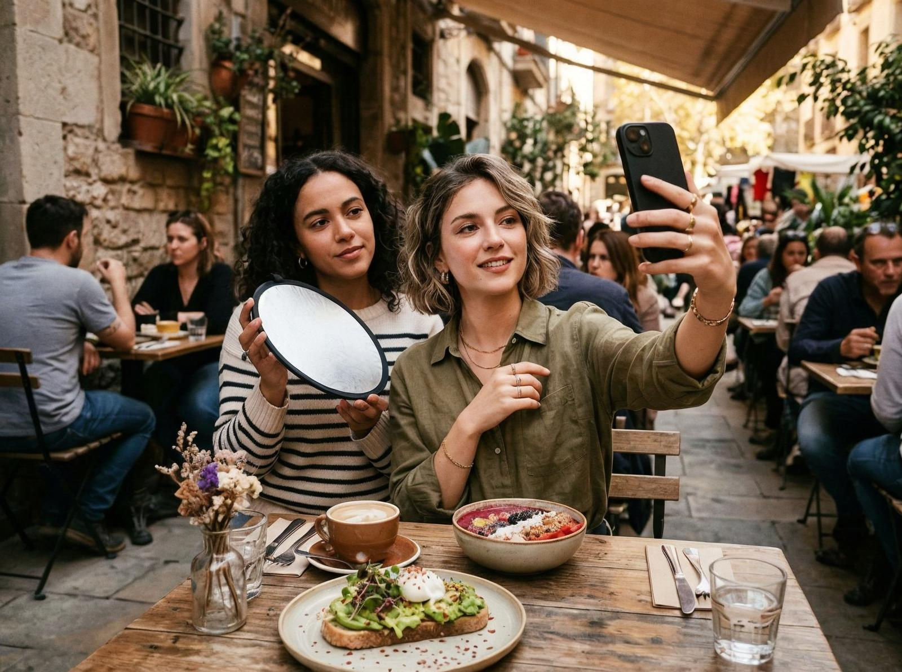
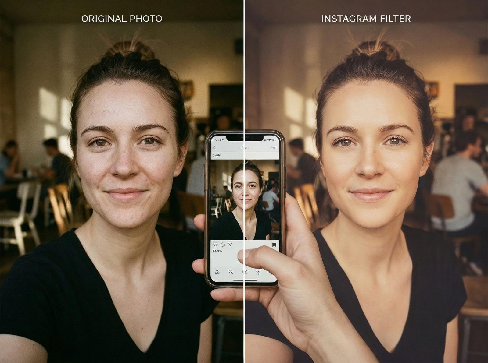

Instagram are o funcție fundamentală: filtre. Poți schimba lumina, culorile, contrastul — poți schimba cum arată realitatea în câteva secunde.
Și totuși filtrele nu sunt doar estetică. Sunt o schimbare psihologică. Nu arătăm realitatea așa cum e, arătăm realitatea așa cum vrem să fie.
Tensiunea centrală a Instagram-ului nu e tehnologică, e culturală. Nu e despre cum funcționează filtrele, e despre cum le folosim. Instagram-ul nu e doar o platformă de sharing de poze, e o platformă de construcție a identității.

Detaliul care contează e că Instagram-ul a creat o estetică standard — culori specifice, lumini specifice, compoziții specifice. Nu e doar o platformă, e un stil.
Complicația e că Instagram-ul e criticat — e fals, e superficial, e toxic. Dar criticile nu înțeleg funcția Instagram-ului. Nu e despre realitate, e despre identitate. Nu e despre adevăr, e despre aspirație.
Și uite de ce asta nu e superficial. Instagram-ul e un simptom al unei schimbări mai mari — de la realitate la aspirație, de la adevăr la identitate, de la autenticitate la curare. E un simptom al unei culturi care vrea să arate bine, nu să fie bine.

Cultura nu a dispărut, dar s-a schimbat. Nu mai arătăm realitatea, arătăm aspirația. Nu mai construim identitate prin fapte, o construim prin imagini. Nu mai suntem autentici, suntem curați.
Instagram-ul nu e doar filtre, e identitate. Nu e doar estetică, e aspirație. Nu e doar realitate, e construcție a realității.